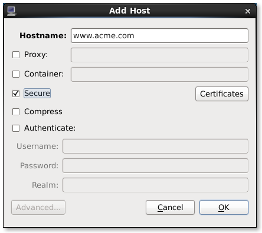

Home · Charts · Time Control
|
|
Home · Charts · Time Control |
certutil pmcd pminfo pmchart pmproxy |
This chapter of the Performance Co-Pilot tutorial covers setting up secure connections between PCP collector and monitor components. PCP network connections can be made secure against eavesdropping, data tampering and man-in-the-middle class attacks.
For an explanation of Performance Co-Pilot terms and acronyms, consult the PCP glossary.
The Performance Co-Pilot includes facilities for establishing secure connections between remote collector and monitoring components.
All connections made to the PCP metrics collector daemon (pmcd) are made using the PCP protocol, which is TCP/IP based. Traditionally, no functionality was available to secure connections between PCP collectors and monitors. However, as PCP evolved to be able to export sensitive information (event trace parameters and detailed per-process statistics, for example), it became necessary to provide safeguards against malicious behaviour.
The cryptographic services used to augment the PCP protocol are provided by Network Security Services (NSS), a library implementing Transport Layer Security (TLS) and the Secure Sockets Layer (SSL) standards, and base cryptographic functions. NSS includes a software-based cryptographic token which is FIPS 140-2 certified.
Both the pmcd and pmproxy daemons are capable of simultaneous TLS/SSL and non-SSL communications. This means that you do not have to choose between TLS/SSL or non-SSL communications for your PCP Collector systems; both can be used at the same time.
Before the PCP Collector system can be requested to communicate with TLS/SSL, certificates must be properly configured on the Collector Server host.
This typically involves:
The process of obtaining trusted certificates is beyond the scope of this document, and will differ depending on whether the certificate authority is internal or external to your organisation. Refer to the chapter titled "Requesting and Receiving Certificates" in the Certificate System Admin Guide for details on managing trusted certificates from a certificate authority.
However, at a high-level: a certificate request (CR) must be generated, then sent to the certificate authority (CA) you will be using. The CA will generate a new trusted certificate and send it to you. Once this certificate has been received install it in the system-wide certificate database as described below.
All PCP Collector systems must have a valid certificate in order to participate in secure PCP protocol exchanges. Certificates are stored in a certificate database, and can be created using certutil (an NSS tool).
In some (non-default) configurations the system certificate database may be protected by a password. Should you choose to select this (non-default) option, by placing the certificate database password in a file the server can still be started as a regular service (i.e. automatically at bootup or otherwise running unattended). This password is stored in clear text within the password file, so its usage represents a significant security risk. Because this password is stored in plaintext, the password file should be owned by the user account under which the PCP Collector system runs. By default this is the "pcp" user. It must be set as read-only for this user and allow no access to others (mode 0400).
# ls /etc/pki/nssdb ls: cannot access /etc/pki/nssdb: No such file or directory # mkdir -p -m 0755 /etc/pki/nssdb # echo > /tmp/empty # certutil -d sql:/etc/pki/nssdb -N -f /tmp/empty # chmod 644 /etc/pki/nssdb/* |
certutil is part of many modern software distributions, and can also be downloaded from the Mozilla NSS project.
At this stage we have a valid (possibly empty) NSS database for our collector certificate. A list of all installed certificates can be obtained using the -L option to certutil, as follows.
$ certutil -d sql:/etc/pki/nssdb -L
Certificate Nickname Trust Attributes
SSL,S/MIME,JAR/XPI
[...certificates list, possibly none at this stage...]
|
Certificates should now be requested from your local trusted certificate authority (CA). Alternatively, it is possible to generate a "self-signed" certificate as follows, using the -x option to certutil.
# certutil -d sql:/etc/pki/nssdb -S -x \ -n "Local CA certificate" -s "cn=Local PCP Installation, dc=YOUR,dc=DOMAIN,dc=NAME" \ -t "CT,," -v 120 # certutil -d sql:/etc/pki/nssdb -S \ -c "Local CA certificate" \ -n "PCP Collector certificate" -s "cn=PCP Collector" -8 "YOUR.HOST.NAME,ALT.DNS.NAME,..." \ -t "P,," -v 120 |
Note: You must customise the red parameters above in upper-case. If you are not using self-signed certificates, you will also need to customise the black parameters above to match certificate details provided by your CA. Finally, you may also wish to change the -v setting, which sets the certificate expiry timeframe. certutil defaults to 3 months, the example above sets expiry in 10 years (120 months).
At this stage, attempts to restart the PCP Collector infrastructure will begin to take notice of the new contents of the certificate database. If we earlier chose to create the system-wide database in the non-default configuration of having a password, we must now configure pmcd and pmproxy to make use of it. This configuration must be performed in the $PCP_PMCDOPTIONS_PATH and $PCP_PMPROXYOPTIONS_PATH files, as recorded in /etc/pcp.conf, using the -P <path> option to these daemons. Detailed diagnostics are available in the daemon log files, located below $PCP_LOG_DIR.
PCP Monitoring (client) tools require a trusted certificate to validate the server in a TLS/SSL connection. This certificate can be installed beforehand or can be delivered via the TLS/SSL connection exchange. In the latter situation, the user is prompted as to whether the certificate is to be trusted (see example below).
Once certificates are in place, we are ready to attempt to establish secure connections between remote PCP Monitor and Collector hosts. This can be achieved by specifically requesting a secure connection for individual host connections, in tools that support this explictly (e.g. pmchart below). Alternatively, an environment variable can be set to request that all client connections within that shell environment be made securely. This environment variable can have the value enforce meaning "all connections must be secure, fail if this cannot be achieved", or relaxed meaning "establish secure connections only for remote collector systems that are configured, fallback to insecure connections if not".
Using the approach of certificate delivery via the TLS/SSL protocol, the database and certificate will be automatically setup in the correct location on your behalf.
$ export PCP_SECURE_SOCKETS=enforce
$ pminfo -h YOUR.HOST.NAME -f kernel.all.load
WARNING: issuer of certificate received from host YOUR.HOST.NAME is not trusted.
SHA1 fingerprint is 34:92:D2:DC:DE:28:3A:2D:DD:B9:1A:6C:C9:51:1E:B8:FA:CE:63:51
Do you want to accept and save this certificate locally anyway (y/n)? y
kernel.all.load
inst [1 or "1 minute"] value 1.26
inst [5 or "5 minute"] value 1.29
inst [15 or "15 minute"] value 1.28
|
At any time, you can query the certificates you have installed locally for remote collector hosts.
$ certutil -d sql:$HOME/.pki/nssdb -L
Certificate Nickname Trust Attributes
SSL,S/MIME,JAR/XPI
PCP Collector certificate Pu,u,u
PCP Collector certificate Pu,u,u
PCP Collector certificate Pu,u,u
PCP Collector certificate Pu,u,u
$ certutil -d sql:$HOME/.pki/nssdb -L -n 'PCP Collector certificate' | grep 'DNS name:'
|
Alternatively, using the manual approach, first use certutil to ensure a user database exists, then export either the CA or the collector certificate in ASCII format for the PCP Collector system we wish to monitor and finally import it into the user database.
$ ls $HOME/.pki/nssdb ls: cannot access .pki/nssdb: No such file or directory $ mkdir -p -m 0755 $HOME/.pki/nssdb $ test -f /tmp/empty || echo > /tmp/empty $ certutil -d sql:$HOME/.pki/nssdb -N -f /tmp/empty |
$ certutil -d sql:/etc/pki/nssdb -L -n "Local CA certificate" -a > /tmp/ca-certificate.asc |
$ certutil -d sql:$HOME/.pki/nssdb -A -n "Local CA certificate" -t "CT,," -a -i /tmp/ca-certificate.asc |
Graphical Monitor Tools
 |
In the PCP strip chart utility pmchart from version 1.5.7 onward, secure connections can be established using the "Add Host" dialog. This can be accessed via the "New Chart" or "Open View" menu entries.
|
Copyright © 2013 Red Hat |